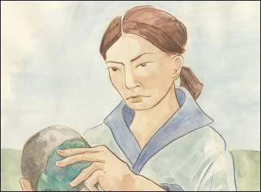

|

Chen Ming was out walking by the river and found the nephrite lying there. "What luck! Look at the wonderful colours in this piece of jade! It must be very valuable. This would make a beautiful pendant or belt. I will take it to Gao Hongzhe's workshop. He'll know what to do with it." | |
| ...previous | next... |